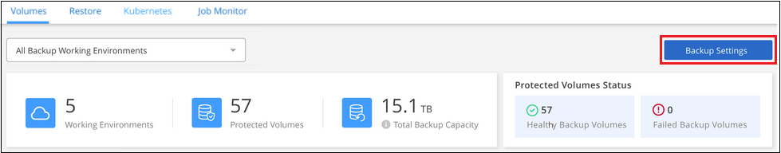
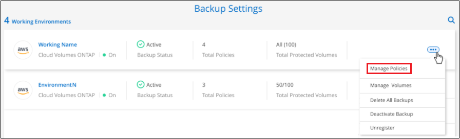
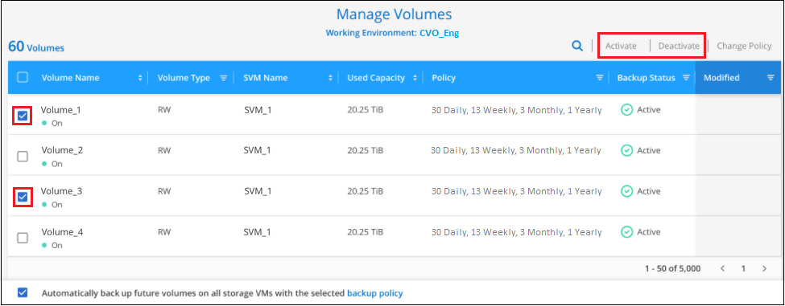
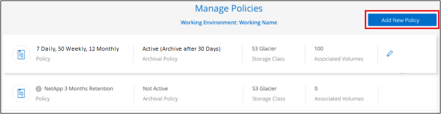
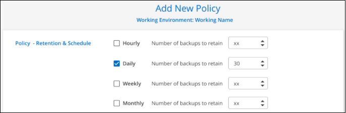
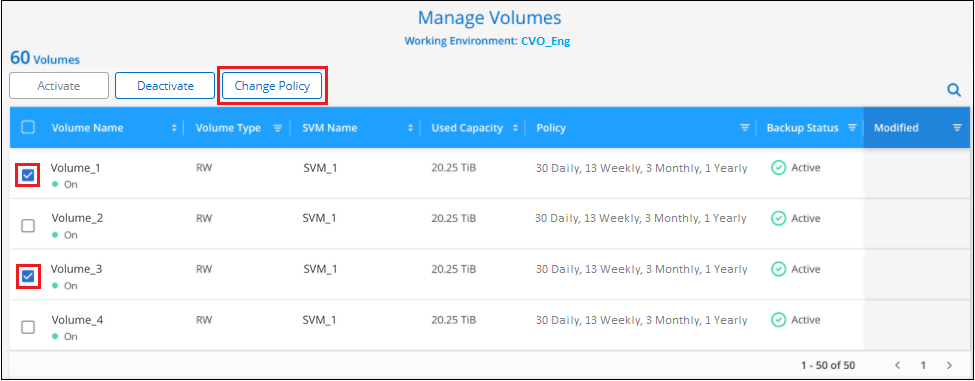
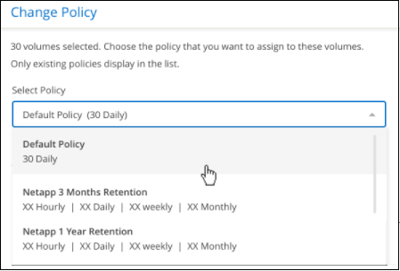
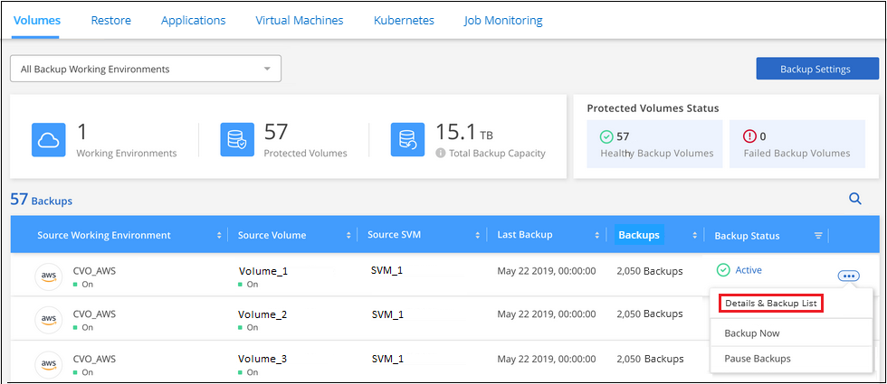
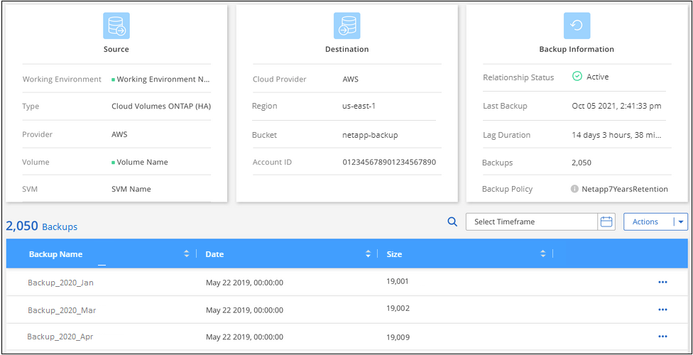
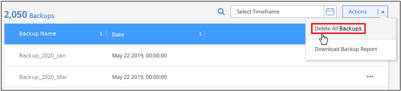

Request doc changes
Request doc changes Edit this page
Edit this page Learn how to contribute
Learn how to contributeManaging backups for your Kubernetes systems
Contributors
You can manage backups for your Kubernetes systems by changing the backup schedule, enabling/disabling volume backups, deleting backups, and more.

|
Do not manage or change backup files directly from your cloud provider environment. This may corrupt the files and will result in an unsupported configuration. |
Viewing the volumes that are being backed up
You can view a list of all the volumes that are currently being backed up by Cloud Backup.
-
Click the Backup & Restore service.
-
Click the Kubernetes tab to view the list of persistent volumes for Kubernetes systems.

If you are looking for specific volumes in certain working environments, you can refine the list by working environment and volume, or you can use the search filter.
Editing an existing backup policy
You can change the attributes for a backup policy that is currently applied to volumes in a working environment. Changing the backup policy affects all existing volumes that are using the policy.
-
From the Volumes tab, select Backup Settings.

-
From the Backup Settings page, click
 for the working environment where you want to change the settings, and select Manage Policies.
for the working environment where you want to change the settings, and select Manage Policies.
-
From the Manage Policies page, click Edit Policy for the backup policy you want to change in that working environment.

-
From the Edit Policy page, change the schedule and backup retention and click Save.

Enabling and disabling backups of volumes
You can stop backing up a volume if you do not need backup copies of that volume and you do not want to pay for the cost to store the backups. You can also add a new volume to the backup list if it is not currently being backed up.
-
From the Kubernetes tab, select Backup Settings.
-
From the Backup Settings page, click
for the Kubernetes cluster and select Manage Volumes.
-
Select the checkbox for a volume, or volumes, that you want to change, and then click Activate or Deactivate depending on whether you want to start or stop backups for the volume.

You can choose to have all volumes added in the future to have backup enabled, or not, by using the checkbox for "Automatically back up future volumes…". If you disable this setting, you’ll need to manually enable backups for volumes added in the future.
-
Click Save to commit your changes.
Note: When stopping a volume from being backed up you’ll continue to be charged by your cloud provider for object storage costs for the capacity that the backups use unless you delete the backups.
Adding a new backup policy
When you enable Cloud Backup for a working environment, all the volumes you initially select are backed up using the default backup policy that you defined. If you want to assign different backup policies to certain volumes that have different recovery point objectives (RPO), you can create additional policies for that cluster and assign those policies to other volumes.
If you want to apply a new backup policy to certain volumes in a working environment, you first need to add the backup policy to the working environment. Then you can apply the policy to volumes in that working environment.
-
From the Volumes tab, select Backup Settings.
-
From the Backup Settings page, click
for the working environment where you want to add the new policy, and select Manage Policies. -
From the Manage Policies page, click Add New Policy.

-
From the Add New Policy page, define the schedule and backup retention and click Save.

Changing the policy assigned to existing volumes
You can change the backup policy assigned to your existing volumes if you want to change the frequency of taking backups, or if you want to change the retention value.
Note that the policy that you want to apply to the volumes must already exist. See how to add a new backup policy for a working environment.
-
From the Volumes tab, select Backup Settings.
-
From the Backup Settings page, click
for the working environment where the volumes exist, and select Manage Volumes. -
Select the checkbox for a volume, or volumes, that you want to change the policy for, and then click Change Policy.

-
In the Change Policy page, select the policy that you want to apply to the volumes, and click Change Policy.

-
Click Save to commit your changes.
Viewing the list of backups for each volume
You can view the list of all backup files that exist for each volume. This page displays details about the source volume, destination location, and backup details such as last backup taken, the current backup policy, backup file size, and more.
This page also enables you perform the following tasks:
-
Delete all backup files for the volume
-
Delete individual backup files for the volume
-
Download a backup report for the volume
-
From the Kubernetes tab, click
for the source volume and select Details & Backup List.
The list of all backup files is displayed along with details about the source volume, destination location, and backup details.

Deleting backups
Cloud Backup enables you to delete a single backup file, delete all backups for a volume, or delete all backups of all volumes in a Kubernetes cluster. You might want to delete all backups if you no longer need the backups or if you deleted the source volume and want to remove all backups.
|
|
If you plan to delete a working environment or cluster that has backups, you must delete the backups before deleting the system. Cloud Backup doesn’t automatically delete backups when you delete a system, and there is no current support in the UI to delete the backups after the system has been deleted. You’ll continue to be charged for object storage costs for any remaining backups. |
Deleting all backup files for a working environment
Deleting all backups for a working environment does not disable future backups of volumes in this working environment. If you want to stop creating backups of all volumes in a working environment, you can deactivate backups as described here.
-
From the Kubernetes tab, select Backup Settings.
-
Click
for the Kubernetes cluster where you want to delete all backups and select Delete All Backups.
-
In the confirmation dialog box, enter the name of the working environment and click Delete.
Deleting all backup files for a volume
Deleting all backups for a volume also disables future backups for that volume.
You can restart making backups for the volume at any time from the Manage Backups page.
-
From the Kubernetes tab, click
for the source volume and select Details & Backup List.The list of all backup files is displayed.
-
Click Actions > Delete all Backups.

-
In the confirmation dialog box, enter the volume name and click Delete.
Deleting a single backup file for a volume
You can delete a single backup file. This feature is available only if the volume backup was created from a system with ONTAP 9.8 or greater.
-
From the Kubernetes tab, click
for the source volume and select Details & Backup List.The list of all backup files is displayed.
-
Click
for the volume backup file you want to delete and click Delete.
-
In the confirmation dialog box, click Delete.
Disabling Cloud Backup for a working environment
Disabling Cloud Backup for a working environment disables backups of each volume on the system, and it also disables the ability to restore a volume. Any existing backups will not be deleted. This does not unregister the backup service from this working environment - it basically allows you to pause all backup and restore activity for a period of time.
Note that you’ll continue to be charged by your cloud provider for object storage costs for the capacity that your backups use unless you delete the backups.
-
From the Kubernetes tab, select Backup Settings.
-
From the Backup Settings page, click
for the working environment, or the Kubernetes cluster, where you want to disable backups and select Deactivate Backup.
-
In the confirmation dialog box, click Deactivate.

|
An Activate Backup button appears for that working environment while backup is disabled. You can click this button when you want to re-enable backup functionality for that working environment. |
Unregistering Cloud Backup for a working environment
You can unregister Cloud Backup for a working environment if you no longer want to use backup functionality and you want to stop being charged for backups in that working environment. Typically this feature is used when you’re planning to delete a Kubernetes cluster, and you want to cancel the backup service.
You can also use this feature if you want to change the destination object store where your cluster backups are being stored. After you unregister Cloud Backup for the working environment, then you can enable Cloud Backup for that cluster using the new cloud provider information.
Before you can unregister Cloud Backup, you must perform the following steps, in this order:
-
Deactivate Cloud Backup for the working environment
-
Delete all backups for that working environment
The unregister option is not available until these two actions are complete.
-
From the Kubernetes tab, select Backup Settings.
-
From the Backup Settings page, click
for the Kubernetes cluster where you want to unregister the backup service and select Unregister.
-
In the confirmation dialog box, click Unregister.